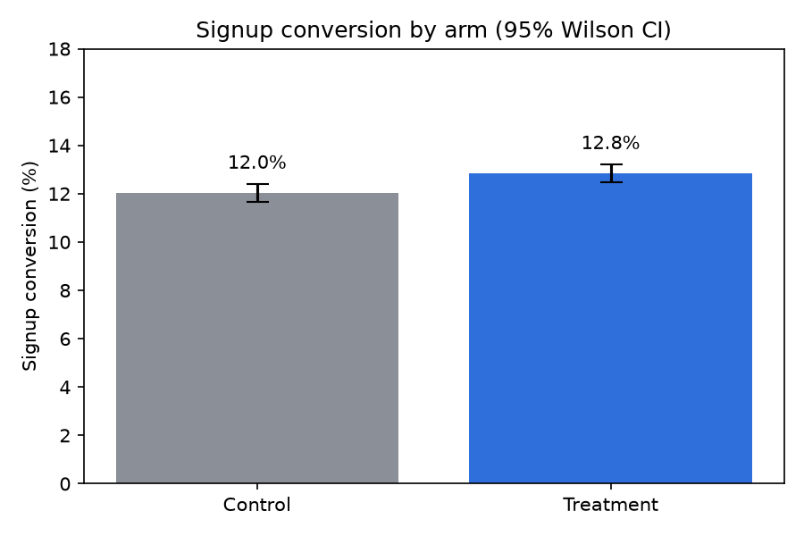
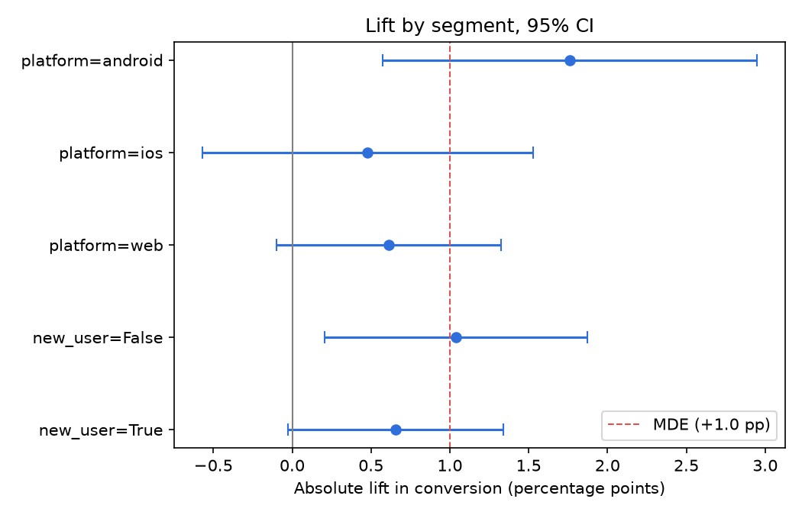
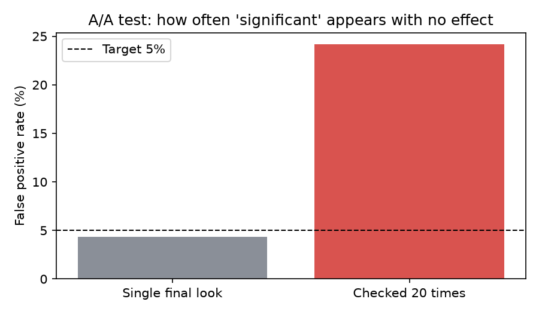

Experimentation · Product analytics
Does a shorter signup flow convert better?
A controlled A/B test of a redesigned signup flow. The question was whether the redesign lifts conversion by at least one percentage point without hurting retention.
Simulated data. The experiment is generated with a known ground truth so every conclusion can be checked. The steps are the ones I would run on a live test.
1. Design, decided before the test
The sample size and decision rule were fixed before any data arrived. That stops the result from shaping the rule.
| Item | Value | Why |
|---|---|---|
| Primary metric | Signup conversion | Directly tied to the change |
| Baseline | 12.0% | Assumed for this scenario |
| Minimum detectable effect | +1.0 pp | Smallest lift that justifies the engineering cost |
| Significance / power | α = 0.05 (two-sided) / 80% | Standard |
| Users per arm | 17,169 | Two-proportion sample-size formula |
| Guardrail | 7-day retention among signups | A shorter flow must not bring in lower-quality users |
Decision rule: ship only if the lift is significant, the point estimate is at least the MDE, the randomisation check passes, and the guardrail is non-inferior within 1 pp.
2. Randomisation check
Control had 29,848 users and treatment had 30,152. A chi-square test for sample ratio mismatch gave p = 0.21, so the split is consistent with 50/50 and the test is valid.
3. Primary result
| Control | Treatment | Difference | |
|---|---|---|---|
| Signup conversion | 12.03% | 12.84% | +0.81 pp (95% CI +0.28 to +1.34) |
| Relative lift | +6.7% | ||
| p-value | 0.003 |

The lift is significant, but the estimate is below the +1.0 pp MDE, so the pre-registered rule does not ship it.
4. Guardrail: retention
7-day retention among signups was 42.7% in control and 42.3% in treatment, a difference of −0.3 pp (95% CI −2.6 to +1.9).
The interval is too wide to show the treatment is no worse than control by more than 1 pp. With about 3,500 to 3,900 signups per arm, this guardrail has low power. Retention is unknown, not confirmed safe.
5. Segments

| Segment | Lift (pp) | p (raw) | p (Holm) |
|---|---|---|---|
| Android | +1.76 | 0.004 | 0.019 |
| iOS | +0.48 | 0.37 | 0.37 |
| Web | +0.61 | 0.09 | 0.18 |
| New users | +0.66 | 0.06 | 0.18 |
| Returning users | +1.04 | 0.01 | 0.06 |
Android is the only segment that survives correction for the five comparisons. I would treat it as a hypothesis for a follow-up test, not as a finding to act on.
6. Why I did not check the results every day
Stopping as soon as p < 0.05 inflates false positives. I ran 600 A/A simulations, where both arms are identical.

7. Recommendation
- Do not ship yet. The primary estimate is below the MDE, and the guardrail is inconclusive.
- Pick a guardrail that can be measured in the time available. Measuring a 0.35 pp retention difference needs about 150,000 users per arm. A 24-hour activation metric would detect problems much sooner.
- If the team needs an answer sooner, run a follow-up test on Android with the MDE set to +1 pp.
Limitations
- The data is simulated, so this shows the method and the reasoning, not a real product result.
- The simulation included a real effect of about +1.2 pp overall. The test estimated +0.8 pp. That gap is sampling error, and it is a reminder that one significant test can under- or over-state the effect.
- Segment results were corrected for five comparisons only. A real analysis would pre-register the segments.
Reproduce
The analysis script is analysis.py. It generates the data, runs the tests and writes the charts.
pip install numpy pandas scipy statsmodels matplotlib python analysis.py